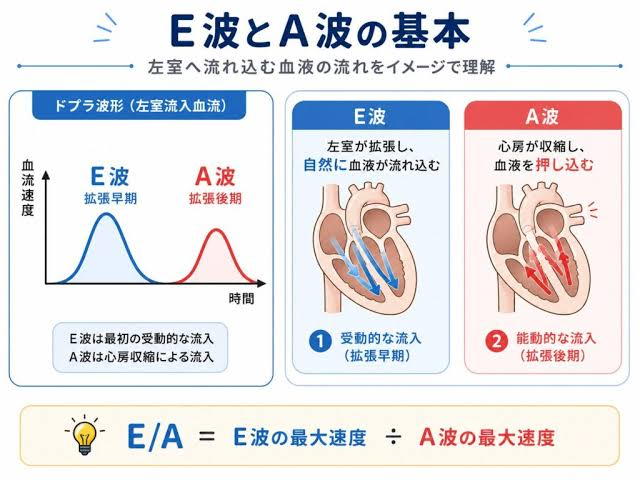
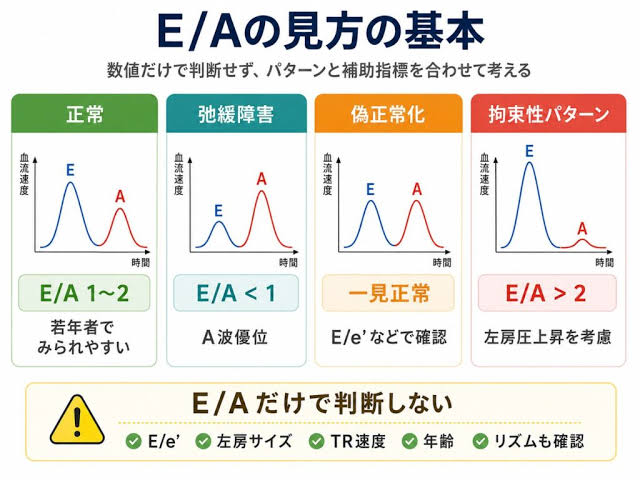
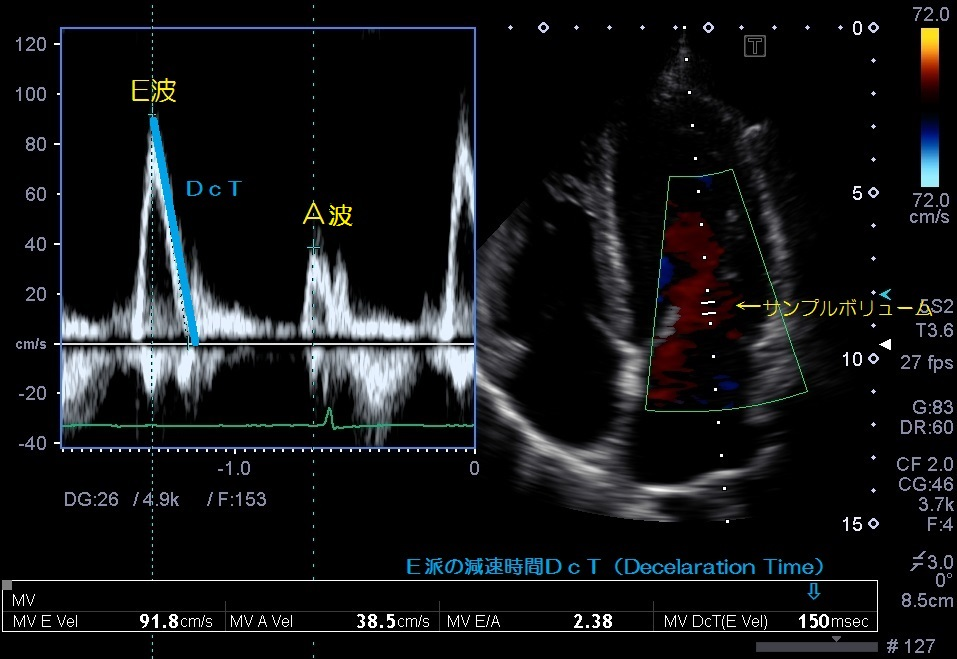
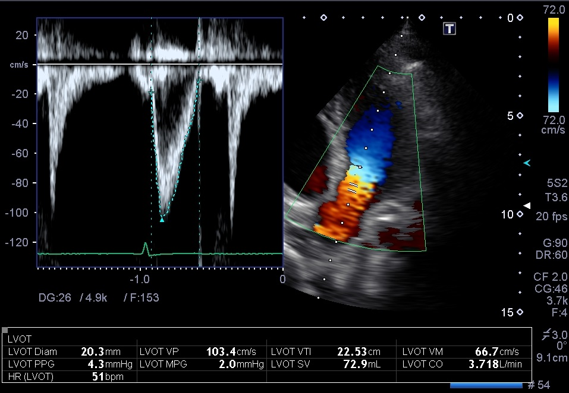

E/A
左室拡張能の評価


サンプルボリュームを拡張期に解放した僧帽弁の先端レベルに置く．

VTI
VTI:流出路波形面積 心拍出量の目安．16cm以上は正常，10cm以下で低心拍出．
4chumber-view
LVOT(左室流出路)の大動脈弁輪5mm手前でPW
下向き波形をtrace，VTIを求める．

左室拡張能の評価


サンプルボリュームを拡張期に解放した僧帽弁の先端レベルに置く．

VTI:流出路波形面積 心拍出量の目安．16cm以上は正常，10cm以下で低心拍出．
4chumber-view
LVOT(左室流出路)の大動脈弁輪5mm手前でPW
下向き波形をtrace，VTIを求める．
